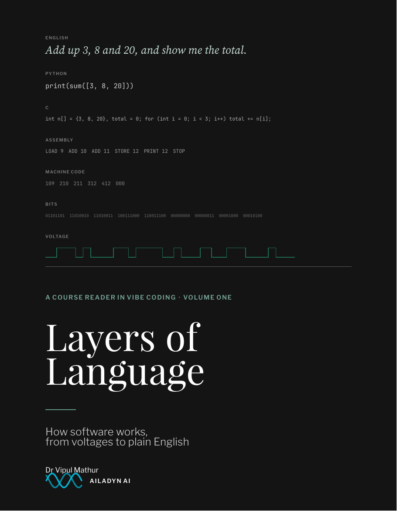
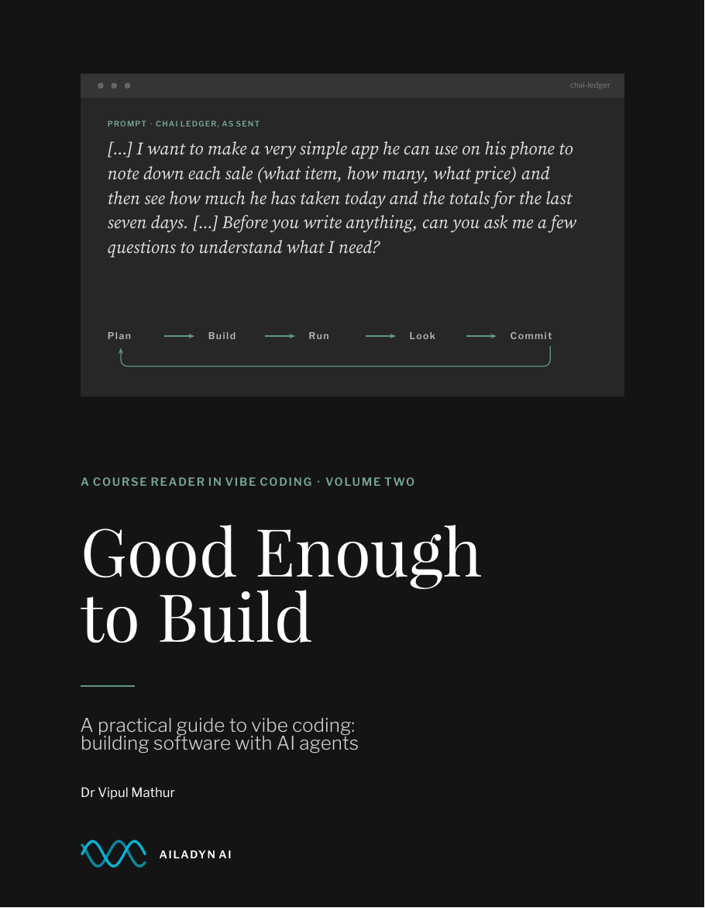

Volume one · how software works
Layers of Language
How software works, from voltages to plain English. Twelve illustrated chapters on the history of programming, from Jacquard's loom to AI agents, for readers with no technical background.
PDF · 205 pages · 27 MB
Read the book (PDF)

Volume two · the practice
Good Enough to Build
A practical guide to vibe coding. Twelve chapters built around a real app made with an AI agent, with every prompt, error and fix shown as it happened, plus cheat sheets and checklists.
PDF · 225 pages · 10 MB
Read the book (PDF)